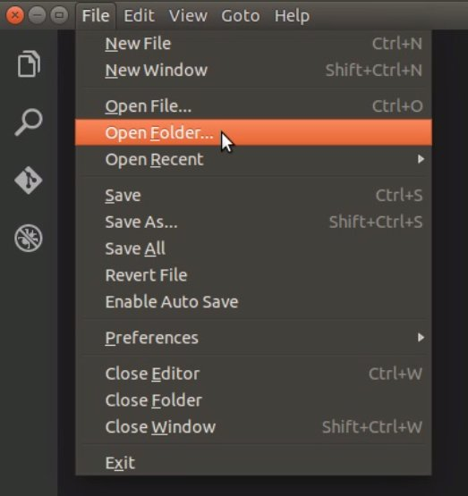
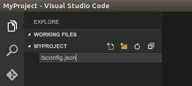
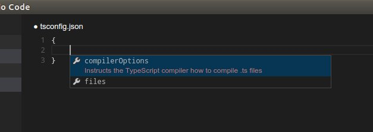
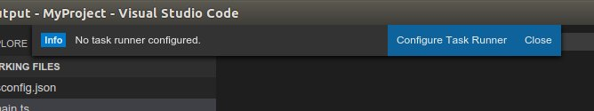
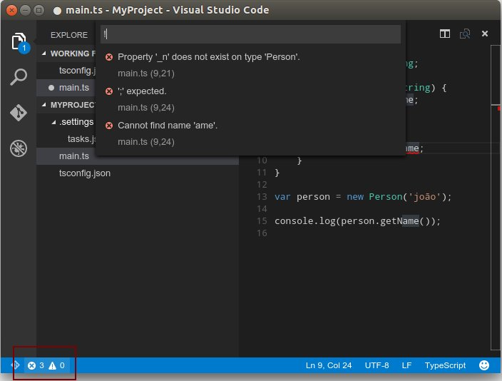

Testando o TypeScript no VSCode (Visual Studio Code)
O VSCode é um editor multiplataforma criado pela Microsoft destinado ao desenvolvimento de diversas aplicações contando com o suporte a várias linguagens de programação. O Visual Studio Code foi criado pelo time da Microsoft usando uma mistura de tecnologias de código aberto e baseadas na web, como o Chromium, o Electron app framework do GitHub e o próprio editor Monaco da Microsoft.
Para facilitar a escrita a partir de agora sempre irei me referir ao visual Studio Code simplesmente como VSCode.
Instalando o VSCode
Para instalar o VSCode acesse a página do projeto https://www.visualstudio.com/en-us/products/code-vs.aspx e vá até a seção Download. Selecione a versão do seu sistem operacional e sigua as isntruções de instalação.
Criando o primeiro projeto TypeScript
Neste pequeno tutorial iremos criar um projeto TypeScript simples. Para iniciar crie um novo diretório chamado MyProject.
mkdir MyProject
Abra o VSCode e abra o diretório MyProject de dentro do VSCode.

Agora, usando o sidebar Explorer, vamos adicionar um novo arquivo chamado tsconfig.json.

Digite { } e com o cursor no meio das chaves pessione Ctrl+SPACE para abrir as opções disponíveis:

Selecione compilerOptions e pressione ENTER. Vamos configurar o output do projeto para ES5, modulo do tipo AMD e emissão de source maps.
{
"compilerOptions": {
"target": "ES5",
"module": "amd",
"sourceMap": true
}
}
Agora vamos adicionar um novo arquivo chamado main.ts. Adicione o seguinte código:
class Person {
private _name: string;
constructor(name: string) {
this._name = name;
}
public getName() {
return this._name;
}
}
var person = new Person('joão');
console.log(person.getName());
Tente compilar o projeto teclando Ctrl-Shift-B. Note que o VSCode irá exibir uma mensagem dizendo que não temos uma task configurada para o nosso projeto (Para saber mais sobre as tasks do vscode acesse: https://code.visualstudio.com/docs/editor/tasks).

Clique em Configure Task Runner para adicionar uma nova task. um novo arquivo chamado tasks.json será criado. Altere a linha que contém a chave "args": ["HelloWorld.ts"] para "args": [] e em seguida tente compilar o projeto novamente utilizando Ctrl-Shift-B. O VSCode irá indicar na barra de status o status da compilação.

Note que caso existam erros os memos serão indicados nada barra de status e você poderá clicar em cima do indicador para obter mais detalhes.

Após a compilação o VSCode irá gerar os arquivos main.js e main.js.map. Trata-se do arquivo JavaScript gerado e do arquivo source map. Agora você pode utilizar o node via linha de comando para executar o código do arquivo main.js.
node main.js
Esse foi um tutorial bem simpels onde tentei apresentar o vscode e mostrar como é fácil iniciar um pequeno projeto em TypeScript. As features do vscode são muito voltadas para o desenvolvimento em TypeScript e eu te incentivo a explorar os varios recursos deste editor.
Abraços!
assdfsdfsdfs

Programador .NET - TypeScript - JavaScript - Membro dos times DefinitelyTyped e TypeStrong.
Tweet Follow @diullei